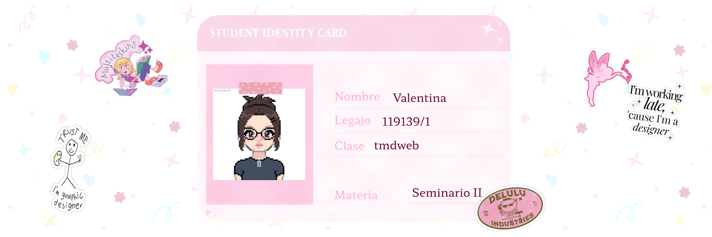

Sobre mí

Desde que tengo uso de razón, me mueve la curiosidad por el arte de crear y contar historias. Cada proyecto que mezcla lo visual, lo narrativo y lo técnico debe encajar como un rompecabezas. Busco entender cómo construir una historia para lograr que transmita algo real.
Aprender y entender es lo que me motiva a aprovechar cada oportunidad que puedo de expandir mis conocimientos, y por esto mismo sentía que una sola carrera me quedaba corta para abarcar todo lo que me apasiona, así que decidí posicionarme entre Diseño Multimedia y Comunicación Digital a través de la UNLP. Además, cada vez que puedo trato de adquirir conocimientos nuevos a través de algún curso o de manera autodidacta, solo por el gusto del saber.
Siempre estoy en un constante proceso de prueba y error, con el fin de crear experiencias nuevas y mejores.